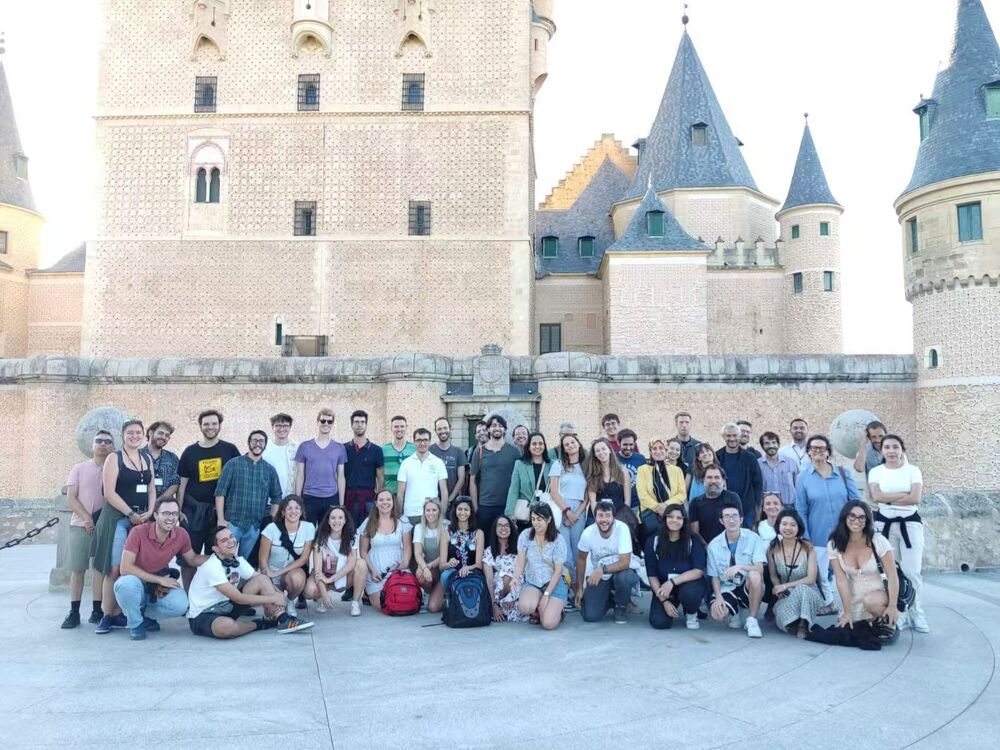
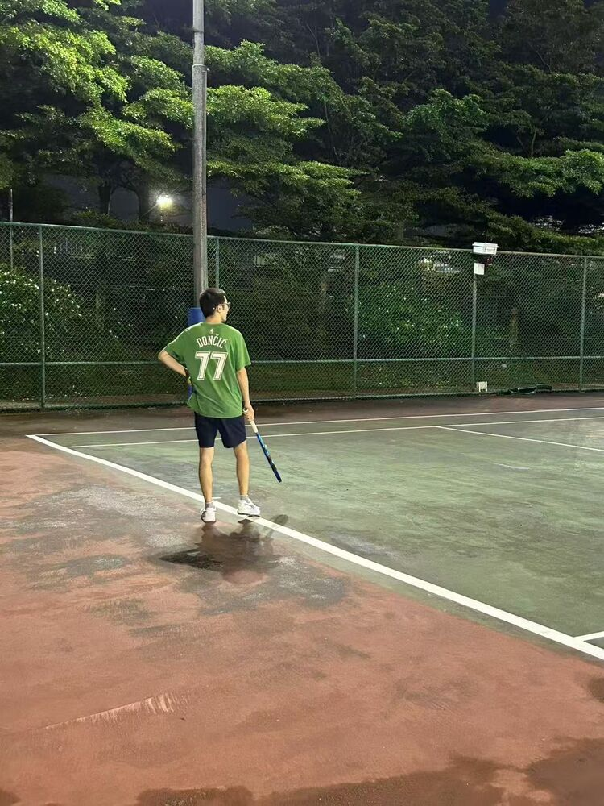
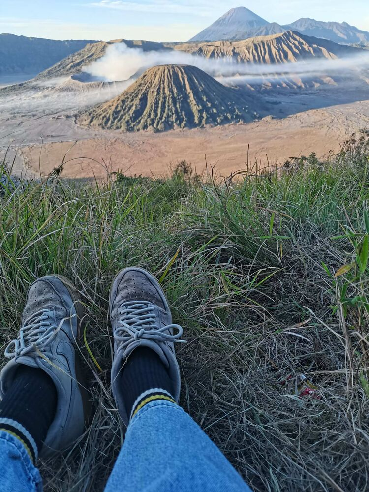
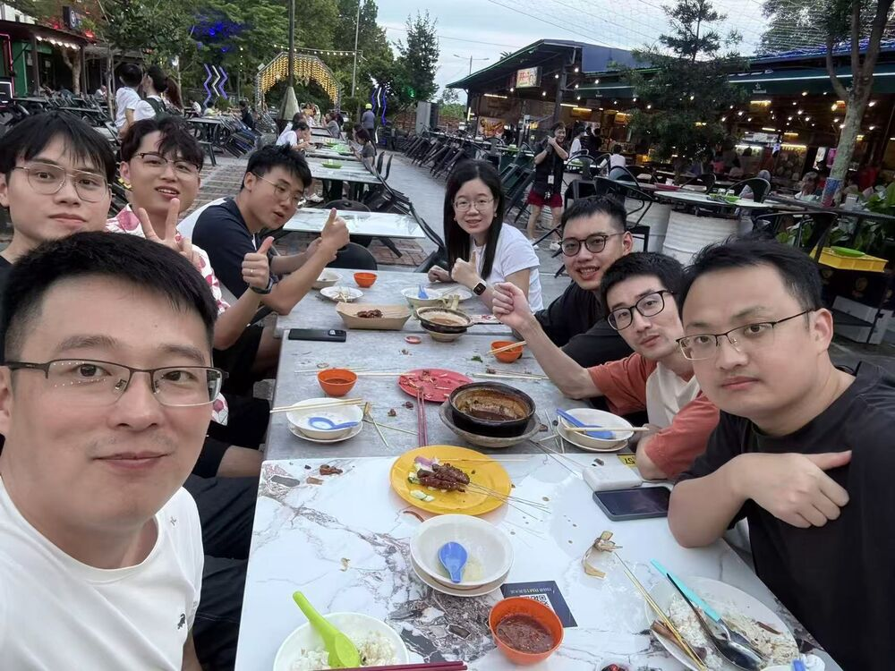
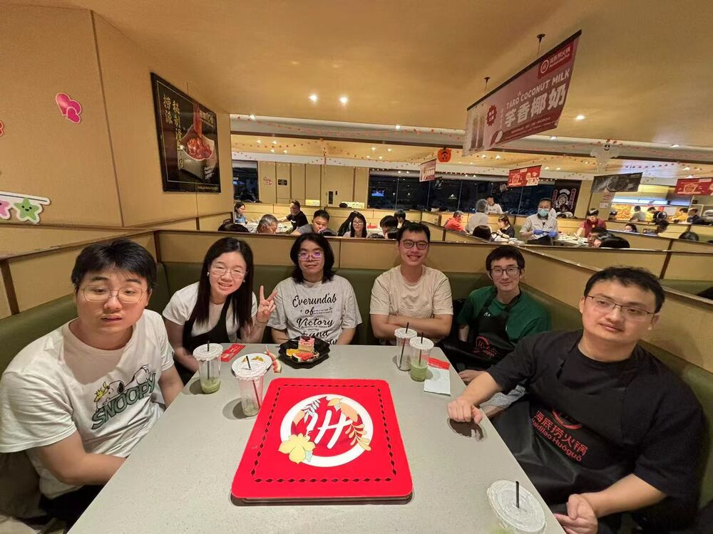

Simulation Movies
Collective behaviors of chemically active droplets
Agent-resolved simulations of isotropic autophoretic disks. Background color shows the solute concentration c/cmax; particle color shows speed. From Nature Communications 15, 2874 (2024). Videos load only when played.
Footprints




